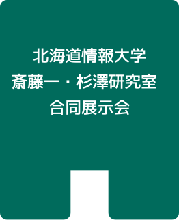
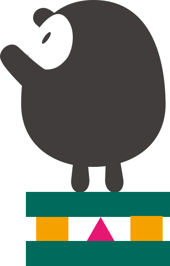
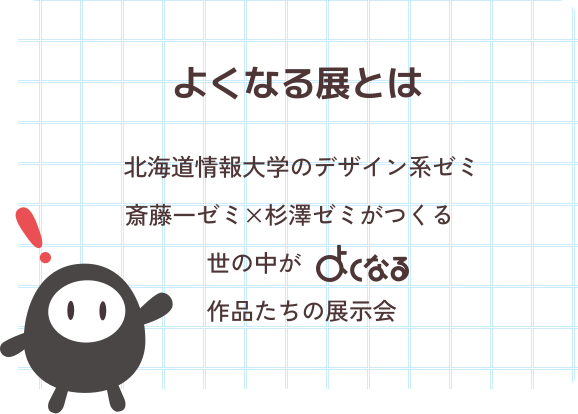
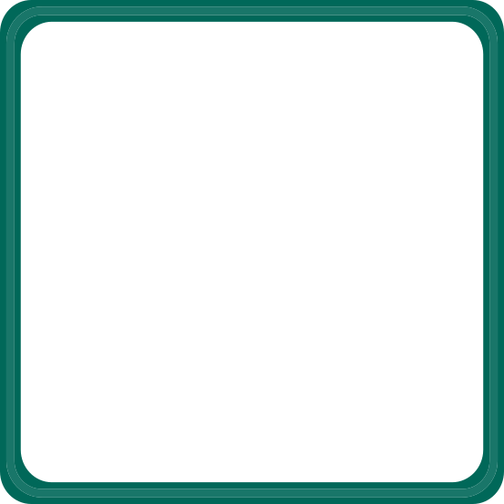
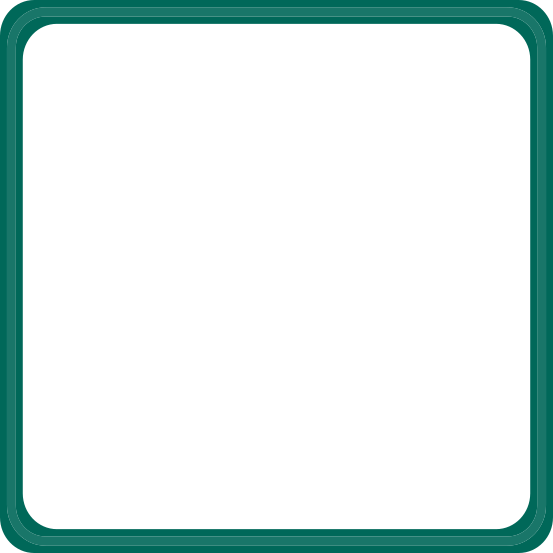

 

風景印スタンプラリーとは江別市内12の郵便局で制作された「風景印」を活用し、まちの魅力を再発見してもらうことを目的とした地域貢献企画です。
今年の取り組みでは、来訪者がより楽しめるよう、新たに「ガチャアプリ」を開発。対象の郵便局を訪れると、オリジナルキャラクターをコレクションできる仕組みを考え、
企画立案・デザイン・アプリ開発・Web制作・広報物の制作まで、すべて学生が主体となって取り組みました。
特設サイトはこちら
→https://s123.do-johodai.ac.jp/lss/2025/
本活動はエゾシカによる社会問題の周知活動を行うNPO法人ezorockの依頼のもと、エゾシカ肉消費促進を目的として取り組みました。
その中でもクリスマスにエゾシカ肉を消費してもらう方法に注目し、企画とプロモーションの考案を行いました。
それに伴い、制作したWebサイトや動画、SNS広告画像を展示しています。
2022年度の受託研究において制作した栗山町の栗山駅南交流拠点施設「栗山煉瓦創庫くりふと」Webサイトについて、施設のさらなる認知拡大及び情報発信のため、栗山町および「くりふと」の体験記事作成を行いました。
くりふとでは栗山町の町民が喜ぶグッズ作成と栗山の特産品を使ったピザづくりを体験しました。
展示会では実際に制作したグッズを展示しています。
記事は「栗山煉瓦創庫くりふと」Webサイトにて読むことができます。
体験レポートはこちら
→https://kurift.jp/reports/